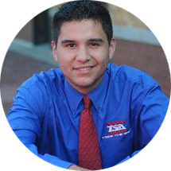
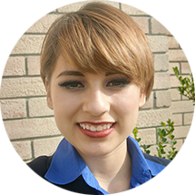
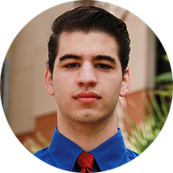
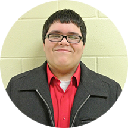
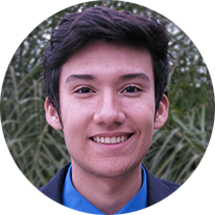
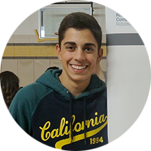

The Technology Student Association (TSA) is a national, non-profit organization of middle and high school students who are engaged in science, technology, engineering, and mathematics (STEM). Since TSA was chartered in 1978, over 2,000,000 student members have participated through challenging competitions, leadership opportunities, and community services.
Mission Statement
The Technology Student Association fosters personal growth, leadership, and opportunities in Science, Technology, Engineering, and Mathematics (STEM); members apply and integrate these concepts through co-curricular activities, competitions, and related programs.
Motto
"Learning To Live In A Technical World"

Creed
I believe that Technology Education holds an important place in my life in the technical world. I believe there is a need for the development of good attitudes concerning work, tools, materials, experimentation, and processes of industry. Guided by my teachers, artisans from industry, and my own initiative, I will strive to do my best in making my school, community, state, and nation better places in which to live. I will accept the responsibilities that are mine. I will accept the theories that are supported by proper evidence. I will explore on my own for safer, more effective methods of working and living. I will strive to develop a cooperative attitude and will exercise tact and respect for other individuals. Through the work of my hands and mind, I will express my ideas to the best of my ability. I will make it my goal to do better each day the task before me, and to be steadfast in my belief in my God, and my fellow Americans.
Meet Our Officers
President - Jose Elizondo
Our chapter President is Jose Luis Elizondo. Jose is a senior and also our Texas TSA State President. He worked hard at the start of high school to become President of Texas TSA and wants to make it known to all members of TSA that it is not impossible to become a state officer. "It takes hard work, dedication, and passion for Texas TSA, which is something that each member of our TSA chapter has," says Jose. Along with this, he is an active member of Veterans' NHS chapter, where he acts as the organization's President. While being swamped with the stress of college applications and scholarships, he still maintains his top 10% ranking in his class and makes time to show each member of our chapter that he values their dedication and participation in TSA.
"The symbol of my office is the gavel. It my duty as president to preside at all regular and special meetings and to promote cooperation in carrying out the activities and work of our organization."

Vice President - Aleida Olvera
Our chapter Vice-President is Aleida Olvera. Aleida Olvera is a junior and had the pleasure of working alongside Jose and the rest of the officer team by being apart of the Texas TSA State Leadership Team. This position allowed her to shadow the officers and find out how being an officer works. Along with this Aleida is a member of Veterans' BPA chapter, apart of our school's Student Council as the Book Club representative, and an active member of NHS. Just recently she became a National Center for Women - Aspirations in Computing National Award Recipient and will be receiving a laptop, $500, as well as a trip to North Carolina for the national awards summary. With all this, she still maintains an excellent academic record and is in the top 5% of her class.
"The symbol of my office is a star. It my duty as vice president to see that there is always a strong membership, a good work program and to be alert to the welfare of our association. "

Secretary- Jaime Martinez
Our chapter’s Secretary is Jaime Martinez. He is a junior and has been apart of TSA since his freshman year. While juggling TSA and his academics, he maintains a strong presence in our school as one of the most involved within our student body. Aside from TSA, Jaime Martinez also participates in SkillsUSA and has participated in the Texas Science Fair with former chapter Secretary Cassandra Gonzalez. Jaime Martinez participated in the Technology Student Association National Leadership Conference in Washington D.C. this past school year, where he and his Webmaster team received 10th place overall in the nation for their beautifully designed website that teaches middle schoolers how to create websites using HTML and CSS.
"The symbol of my office is the pen. It is my responsibility as secretary to keep accurate and proper records of all business and correspondence of our association."

Treasurer- Jaime Hernandez
Our chapter’s Treasure is Jaime Hernandez. He is a junior and has been apart of TSA since his freshman year. Jaime is also apart of our school’s BPA chapter, an officer of the Class of 2015, and is actively involved in school volunteer work. While balancing TSA and his academics, he participates in the Intel Science Fair. He is currently working on an innovative project to help protect others from dangerous situations with the use of a bluetooth connected wristband. His favorite part of TSA is the competitive season, where he strives daily to do better than he did in his previous years. Having participated in Video Game Design has inspired him to want to pursue a career in a computational field in the future.
"The symbol of my office is the balanced budget. It is my duty as treasurer to keep accurate records of all funds and see that our financial obligations are met promptly."

Reporter- Gilbert Saldana
Our chapter’s Reporter is Gilbert Saldana. Being a senior, Gilbert is doing his best to make his final year of TSA the best one he has had yet. His favorite competitive events to participate in are Music Production and Debating Technological Issues. Being an active leader within his school by assuming leadership roles in Veterans’ Student Council, NHS, and TSA chapters has only inspired him to pursue a career in the field of politics. Along with his involvement in other extracurricular activities, Gilbert is ranked number 10 in his class and even ran for Texas TSA state office this past year. His success in his academics and leadership abilities are a result of TSA’s influence in his life and is forever grateful for this organization.
"The symbol of my office is the beacon tower. It is my duty as reporter to see that our school, community and national association have a complete report of our organization’s activities."

Sergeant at Arms- Manolo Alvarez
Our chapter’s Sergeant at Arms is Manolo Alvarez. Manolo is one of our TSA chapter’s most involved underclassmen. He shines above all others by being ranked in the top 5% of his class and participating in multiple extracurricular activities aside from TSA such as Golf and SkillsUSA. He is a main contributor to the VEX Robotics team for he is the lead programmer; he also participates in Dragster Design, Video Game Design, and Manufacturing Prototype. His involvement in TSA only grows stronger as the school year continues. His love for TSA is so great that he plans to eventually run for state office and then national office in order to give back to the Technology Student Association.
"The symbol of my office is the hearty handshake. It is my responsibility sergeant-at-arms to see that the assembly is comfortable and properly welcomed. It is also their duty to serve as doorkeeper for this organization."